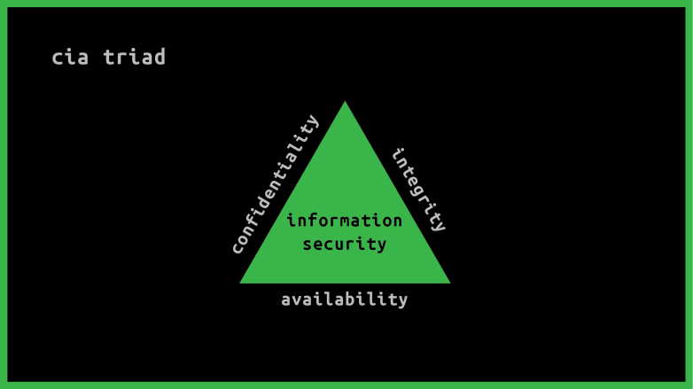
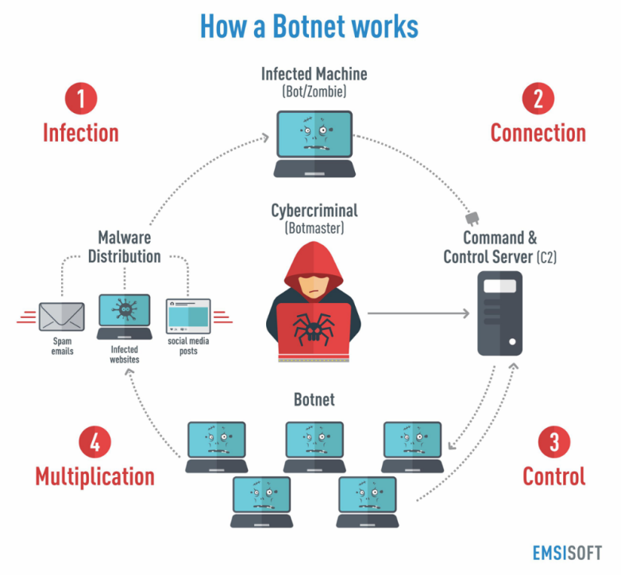

Our technologies are connected and the technology that we use is part and parcel of our everyday life. We constantly use different connected technologies for making our lives better. But we care less when we actually think about the security regarding that particular technology. Locking your device is not the only privacy concern that you should think of.
Before going into major privacy concerns, let us know what the most vulnerable technology that we use are –
- Personal Computer
- Laptop
- Smart Phones
Distinguishing Online and Offline Identity
As more time is spent online, our identity, both online and offline, can affect our life. Our offline identity is the person with whom our friends and family interact with on a daily basis at home, at school or at work. They know our personal information, such as our name, age, or where we live.
Online identity is what we show online about us and this should be revealed at a limited amount of information regarding us. – Usernames should be selected accordingly and it must not contain the password, even a hint about that so that the hackers can easily get.
Challenge in Current Security Space
- Threats Increasing
- Alerts Increasing
- Available Analysts Decreasing
- Needed Knowledge Increasing
- Available Time Decreasing
Our Data
So what makes these vulnerable? Why do people actually try to get into our device? It is because they want our data.
Any information regarding us can be considered as data. Personal information uniquely identifies us as an individual. Information such as medical, educational, financial, and employment information, can be used to identify us online.
Our data includes –
- Personal Data
- Medical Data
- Information Online
- Educational Data
- Financial Data
So where is our data? A simple example –
When we share our pictures online with our friends, do we know who may have a copy of the pictures? Copies of the pictures are on our own devices. Our friends may have copies of those pictures downloaded onto their devices. If the pictures are shared publicly, strangers may have copies of them, too. They could download those pictures or take screenshots of those pictures. Because the pictures were posted online, they are also saved on servers located in different parts of the world. Now the pictures are no longer only found on our computing devices.
Our Computing Devices
Our computing devices do not just store our data. Now, these devices have become the portal to our data and generate information about us. We share a lot of things from our financial to medical to personal data through our devices. And we open horizons for hackers, which make these profitable through leaking our information. Simple Example: Our monetary transaction information allows hackers to be lucrative on our money and may use means to steal those.
So what do the hackers get when they hack –?
- Money
- Identity
Let’s go through some privacy concerns classified by generations –
Silent, Boomers and Generation X (Age 74-91, Age 55-73 and Age 39-54)
Major concerns are monetary and identity. Hackers will try to get information based access from them. Often used social engineering on them, to get passwords related to their bank account and hijack identity to make certain calls to get their data.
Millennial and Generation Z (Age 23-38 and Age 7-22)
Mostly Monetary, Identity and most significantly private conversations and multimedia.
The things detailed until now refers to the major privacy concerns and issues that we are facing. Now let’s talk more about what and how intruders get into our system and what they do.
CIA Triad
Confidentiality
Equivalent to privacy. It measures prevent data from falling into the hands of people who do not have authorization to access said information. Data restricted to only authorized entities. Data Encryption is a very common method of doing that.
Integrity
In IT world, making sure information is accurate and always stays that way is described by integrity. Maintaining consistency and accuracy of data throughout the life cycle. Common to use hash values (A hash function is any function that can be used to map data of arbitrary size to fixed-size values. The values returned by a hash function are called hash values, hash codes, digests, or simply hashes. The values are used to index a fixed-size table called a hash table. Use of a hash function to index a hash table is called hashing or scatter storage addressing.) For data integrity verification. When downloading, the hash value of the uploaded file and the hash value of the downloaded file must match to make sure the integrity is accurate.
Availability
Ensuring availability requires maintenance and upgrading of hardware, software and operating system environments. Keeping the business operations up and running. Business continuity plans, disaster recovery, redundancy, all those are best practices consider for availability to guarantee that the business is always running.
What is deleting a file? And after deleting that file does it even get deleted?
The operating System keeps track of every file. They basically have a hypothetical chart like follows –
| File | Location on Disk |
| Sth.abc | —– |
What is this location on the disc? – Denotes to the physical location on the disc. The file or the data related to that file is stored in specific byte addresses.
When a file is deleted what actually the operating system does? – Just forgets the entry but does nothing to the physical device.
| Difference between SSD and HDD file deletation – |
| HDD will just remove the data pointer and mark it for later overwriting. Unlike a spinning disk like an HDD, SSD can’t overwrite your data. First, you need to delete the cell first, then start writing your data. SSD just removes
first a file to recycle bin and when you empty it, it basically sends it to TRIM, a feature of SSD and the data stays there and gives notification to the OS that the position of the data that is new to the TRIM has just been
cleared to overwrite. But if you clean the TRIM location by garbage cleaning (another feature) then the data is permanently removed. So, SSD is best to store data which are of most concerns. |
HTTP Cookie
Dynamic and Interactive websites use cookie. These are basically little files or values of a particular site installed into the browser to keep track, if I was there before or not. Simple example: You go visit a website, the website wants to know if you want the site in English or any other language, you interact with that and the website will store your preference in a cookie, in your own computer, mainly your browser memory. So when you will be visiting the website the next time the website will know from that cookie that you wanted a site in English.
Cookie contains many kinds of information about you –
- The time you visited a particular website.
- In e-commerce sites, the items that you had in shopping bag.
- All the links that you clicked in a certain website.
It only works with the website that you allowed a cookie. A cookie of facebook will not work in MySpace’s website and vice-versa.
It started with storing simple preference and now has evolved large enough to store any data that you have permitted it to store. It has gradually evolved into ID based identifier stored into your computer allowing to 3rd party websites to access the information stored in the cookies.
More InformationCookie Stealing
If a hacker gets the access to you cookie from your browser, in some way, the hacker can impersonate as being you on the internet.
First let’s know different common HTTP Request response.
| Codes | Meaning |
| 200 | OK |
| 301 | Moved Permanently |
| 302 | Found |
| 304 | Not Modified |
| 401 | Unauthorized |
| 403 | Forbidden |
| 404 | Not Found |
| 500 | Internal Server Error (When website is not implemented correctly in the website.) |
When we are interacting with a website and also through different websites, we are basically sending HTTP Requests to that server and server sends it back when I am a known person to that server.
A simple registering and logging communication between a server and a client –
| Client | Index.html GET |
| Server | Index.html & Cookie |
| Client | Register.html GET & Cookie YES |
| Server | Register.html |
| Client | Registration_Done.html GET & Cookie storing your information |
| Server | Congratulations.html |
If a cookie is stolen, one can impersonate and go to a website, and pretend to be me doing different activities that obviously, you are not doing or will not do. Esp. to capture credit card and online transaction details. The cookie is stored on my browser, on my computer not specifically in the server of websites, even if it is stored there, it is highly probable that those are encrypted. So how a cookie is stolen?
Cross Site Scripting Attacks
What it basically does? Injects a script inside a website (not secured). An attacker injects the malicious code into the victim’s web application to hack sensitive data like cookies, browser storage. As a result, they can hack the sensitive data when they found any loophole where their query reflects as HTML in the web application instead of HTML entities. Commonly used language: JavaScript, HTML.
Session Hijacking
- Finding and taking over an existing network session.
- Taking over a suspended or saved session context.
Authentication
Sender, Receiver want to confirm identity of each other. We usually authenticate our devices to certain services, so that it can by default understand who we are.
2FA Authentication
Two-factor authentication (2FA), sometimes referred to as two-step verification or dual-factor authentication, is a security process in which users provide two different authentication factors to verify themselves. This process is done to better protect both the user’s credentials and the resources the user can access. Two-factor authentication provides a higher level of security than authentication methods that depend on single-factor authentication (SFA), in which the user provides only one factor — typically, a password or passcode. Two-factor authentication methods rely on a user providing a password, as well as a second factor, usually either a security token or a biometric factor, such as a fingerprint or facial scan.
Attacks
An action taken by a human, with intent to violate security, constitutes an attack.
An attack is an action by a human with intent to violate security. It does not matter if the attack succeeds. It is still considered as an attack even if it fails.
There are mainly 2 sort of Attacks – Active, Passive.
There are mainly 2 forms of Passive Attack –
- Disclosure (Release of Message Contents)- The content of a message is revealed to unauthorized parties. This is an attack on the confidentiality of a message. Interception + Reveal.
- Traffic Analysis (or Traffic Flow Analysis)- Even if an opponent cannot read the message content, information about the message (or even the mere fact that a message has been transmitted) may be useful information to the opponent. This is also an attack on the confidentiality of the message. Frequency and Size of the message.
There are 4 forms of active attacks –
- Masquerade- An opponent impersonates a known or authorized person or system. This is an attack on authentication of the authorized entity’s identity. (i.e. an attack on the authentication of the origin of the message.)
- Replay- A copy of legitimate message is captured by an opponent and re-transmitted. This is an attack on integrity of the systems data. Creates issue in financial services.
- Modification- The content of a legitimate message is altered. This is an attack on integrity of the message.
- Denial of Service (DoS)- An opponent prevents authorized users from accessing a system. This is an attack on availability of the system.
Malware and Ransomware
Malware
Short for malicious software, is any software used to disrupt computer or mobile operations, gather sensitive information, gain access to private computer systems, or display unwanted advertising. Before the term malware was coined by Yisrael Radai in 1996, malicious software was referred to as computer viruses.
Types of Malware
Virus
Piece of malicious code that spreads from one computer to another, by attaching itself to other files using self-replication. Needs human interaction to self-replicate. Due to its self-replicating nature, they are quite difficult to remove from a system. They also use tactics to hide on the system, like polymorphic code which encrypts and duplicates itself which makes it a little bit harder for the antivirus to find. – Polymorphic Virus. Harder to reverse engineer to create signatures for it.
Worms
Self-replicating malware that does not require human interaction. Their work is to just spread, cripple resources and turn computers into zombies.
Trojan Horses
Hidden Malware. Damages the system. Gives and attack access to the host. They are usually introduced into the environment to a computer by posing as a vending package, such as a game, wallpaper, or any kind of download.
Spyware
The main goal of spyware is to track and report the usage of the host or to collect data that the attacker desires to obtain. It can include web browsing history, personal information, marketing information, any kind of files the attacker wants to chase.
Adware
Code that automatically displays or downloads unsolicited advertisements, usually seen on a browser pop up.
RATs
It stands for remote access tool or remote access trojans. RATs allow the attacker to gain unauthorized access and control the computer.
Rootkit
It’s a piece of software that is intended to take full or partial control of a system at the lowest level.
Ransomware
It’s a malware that infects the host with a code that restricts the access to the computer or the data on it. The attacker demands a ransom to be paid to get the data back. Most recent WannaCry Ransomware.
Threat Examples
Other cybersecurity threats beside malware. Botnets, keyloggers, logic bombs and their components.
Botnets
Set of compromised hosts, that enables attackers to exploit those computer resources to mount attacks.
These operations are run by Black Hat Hackers, to run operations such as in Spam, Denial of Service attacks, Phishing, Spyware, mine personal information, crypto currency.
The computers part of this Botnet is known as Zombies or Drones that we command from a bot master or a bot herder.
Other Malware Attacks –
Keyloggers
Any hardware software that records every key stroke made by a user.
Logic Bombs
Code that door mounts on a target until it’s triggered by a specific event such as data. In time, when the condition is met it donates to perform whatever it was programmed to do. Usually erases a data or corrupts a system.
APTs
Advanced Persistent Threats, its main goal is to get access and monitor the network to steal information until staying undetected for a long period of time. Targets – Military, Government, Finance or Companies.
Cyber-Kill Chain
The cyber kill chain is a sequence of steps that map the phases of a cyber attack from the early stages of detection to data exfiltration. Kill chain helps them grasp and battle malware, data breaches, and sophisticated persistent attacks (APTs).
Lockheed Martin developed the kill chain structure from the military model – originally structured to define, plan to strike, engage, and destroy the target. After its inception, the kill chain has developed to help predict and detect insider threats, social engineering, sophisticated malware, and innovative attacks.

| Reconnaissance | Research, Identification, and selection of targets. |
| Weaponization | Pairing Remote access malware with exploit into a deliverable payload (e.g. Adobe PDF, MS Office files) |
| Delivery | Transmission of weapon to target (e.g. via e-mail attachments, websites, or USB drivers) |
| Exploitations | Once delivered, the weapons code is triggered, exploiting vulnerable applications or a system. |
| Installation | The weapon installs a backdoor on targets system allowing persistent access. |
| Command and Control | Outside server communicates with the weapons providing “hands on keyboad access” inside the |
| Actions and Objective | The attacker works to achieve the objective of the intrusion, which can include exfiltration or destruction of data, or intrusion of another target. |
Social Engineering
Effective method of cyber exploitation.
Social Engineering is the use of humans for cyber purposes. Tricking somebody to do something that they don’t want to do. Tricking somebody to gain information – like password.
This is used more often in offensive security operations. Advanced Firewalls, Advanced Systems are hindrance to get access into the client or the victim network. So trying to get information from the users is a very good way – Social Engineering Attack.
Social Engineering Toolkit (Linux, MAC OS) – Used to make fake websites. Clone external website. Also for spoofing voice calls.
Phishing and Vishing
Phishing
Gophish – Open Source Phishing Platform that will give you a lot of tools, a lot of information to try to understand if your cybersecurity training program inside your company, inside your network is something that it’s adding value to the knowledge of the users.
Usage – Generates Phishing Email, Fake HTML to prompt users to input something. Will send feedback of opening or usage or any credentials given.
Vishing
Vishing is basically non-technical way of using voice or different activity to phish the client. Manipulating somebody to get information from them.
We have talked on the privacy concerns, Major ways a privacy breach happens. Now let’s discuss on what measures we can take to ensure privacy.
Devoid of Common Sense
Before jumping in to the hard carried out privacy ensuring let us talk on some stupidities. To err is human, but don’t let your errors destroy you. Some basic common sense less issues that gives rise to huge data breach, and destroys our privacy –
- Opening a mail that is not known to you – it might get access to your device and may contain malicious codes that broadcasts your different activities, even it can access your camera without you noticing it.
- Cruising through sites, and clicking on spam links that accidentally downloads adware and different sort of tracking and malware in your device.
- Not locking your computer or cellphone.
- Sharing anything and everything without verifying to whom you are sending it to.
- Uploading images and videos without putting privacy, rather publicly sharing.
- Sending Nudes.
How to safeguard yourself from these privacy concerns –
- Building common sense.
- Sharing when you fully trust – Which you shouldn’t.
- Lock your phone and confirm privacy all the time. Ensure 2 Factor Privacy in your device.
- Think first and then upload, give privacy before uploading.
- Open mails when you actually get what the mail is about. If you don’t understand better to flag it. Even if you have opened a mail. Don’t download anything from an unknown mail.
- Tap or click on links which you really think that are the ones. And don’t let the website download anything to your device unknowingly. Usually the browsers come with safety measures while downloading a file from any website.
How do we protect against threats and malwares?
Technical Controls
Hardware or software that aid into protect any information.
Antivirus
Files for executable code and much of signatures that are known viruses.
IPS IDS UTM
Inter Operation Systems, Internal Detection Systems, Unified Threat Management Systems – Systems that can look for and texting interesting progress when we get to compromise on the environment. Depends on organization security needs.
Updates
All software need to be up to date to prevent new holes into our security. This is done by applying security patches.
Operational Controls
Also known as Administratively Controls. They are put in place by management and depends on the stuff on complying in order to be effective.
Policies
It’s a written document issued by an organization to ensure that all its users comply with the rules and guidelines related to security. Example – Password Policy.
Trainings
Training is to make sure that users of the organization are aware of its policies or threats out there. An example could be a social engineering training. How it shows the user. It shows the user how to deal with the social engineering attacks.
Revision and Tracking
It means ensuring that the items that we just mentioned they stay up to date.
There are also cryptography and firewall based network security, won’t get into any details. Just discussing the definitions.
Firewall
Firewall isolates organizations internal net from larger internet, allowing some packet to pass, blocking others. It is a protection mechanism. It is generally used in pairs.
Why Firewalls are used?
Prevent Denial of Service Attack: SYN Flooding: Attacker establishes many bogus TCP connections, no resources left for real connections.
Prevent Illegal Modification/Access of Internal Data: Example: Attacker replaces a websites homepage with something else.
Allow only authorized access to inside network Set of authorized users/hosts
Cryptography
It is basically secret writing. Secure communication that may be understood by the intended recipient only. There is data in motion and data at rest. Both need to be secured. This concept of cryptography is not new and is used for thousand years. Egyptian Hieroglyphics, Spartan Scytale, Caesar Cipher etc are examples of ancient cryptography.
\Types of Cryptography
There are three primary types of modern encryption –
Symmetric Encryption
Use the same key to encrypt and decrypt. Security depend on keeping the key secret at all times. Strengths include speed and cryptographic strength per bit of key. The bigger the key the stronger the algorithm. Key needs to be shared using a secure, out-of-band method. DES, Triple DES, AES are examples of Symmetric Encryption.
Asymmetric Encryption
Whitfield Diffie and Martin Hellman, who created Diffie-Hellman. Pioneers of Asymmetric encryption. It uses two keys. One key can be made public, called public key. The other one needs to be kept private, called private key. One is used for encryption and another one is for decryption.
It is used in digital certificates. PKI – Public Key Infrastructure. It uses “one-way” algorithm to generate the two keys. Like factoring prime numbers and discrete algorithm. Slower than symmetric encryption. In case of HTTPS, Asymmetric is used for securing the connection then symmetric is used in way forward.
Hash Functions
A hash function provides encryption using an algorithm and no key. A variable-length plaintext is ‘hashed’ into a fixed-length hash value, often called a ‘message digest’ or simply a ‘hash’. If the hash of a plaintext changes, the plaintext itself has changed. This provides integrity verification. SHA-1, MD5, older algorithms are prone to collisions (Two different plaintext having the same hash). SHA-2 is the newer and recommended alternative.
Cyber Law in Bangladesh
There are not enough laws in Bangladesh which may punish the cyber criminals. In Bangladesh court there is a law named “The Bangladesh Information & Communication Law 2006” (As amended in 2009). In this law section 56(1) has declared the penalty of 10 years imprisonment with or without fine.
Section 68 of the said act has declared the formation of a special tribunal named “Cyber Tribunal”. Who is may take cognizance of such kinds of Cyber Crime but it has yet to prevent or punish the criminals. It has not yet reward any kind of punishment.
Due to the scarcity of trained specialist assisting the court it has become very much impossible for the judge to trace the crime as well as the criminal and to punish him. There is only a cyber-tribunal in Dhaka City established under section 82 of the said act. This tribunal has not yet reward any punishment to any criminal. Out of this till to the establishment of Cyber Tribunal in the district court the Session Judge has the cognizance to trial such kind of crime under section 74 of the said act.
In Bangladesh there is a statutory authority named BTRC which perform as a watchdog in cyber protection but it is yet to fulfill its promises. It has the authority to conduct mobile courts with the help of other government organs for the speedy trial of such kind of crime.
Conclusion
Privacy of Technology is a rising concern and we all should know of the fact that how are data and privacy are at stake. We all should watch out for the discussed issues and make our data secured. We can only protect our data, no else will. Let us safeguard our data and technology.
Link to the SlideReference
- ”Defining generations: Where Millennials end and Generation Z begins”, Pew Research Center, 2020. [Online]. Available: Here
- ”What is Two-Factor Authentication (2FA) and How Does It Work?”, SearchSecurity, 2020. [Online]. Available: Here
- ”Weakness Of Cyber Law In Bangladesh Information Technology Essay”, Ukessays.com, 2020. [Online]. Available: Here